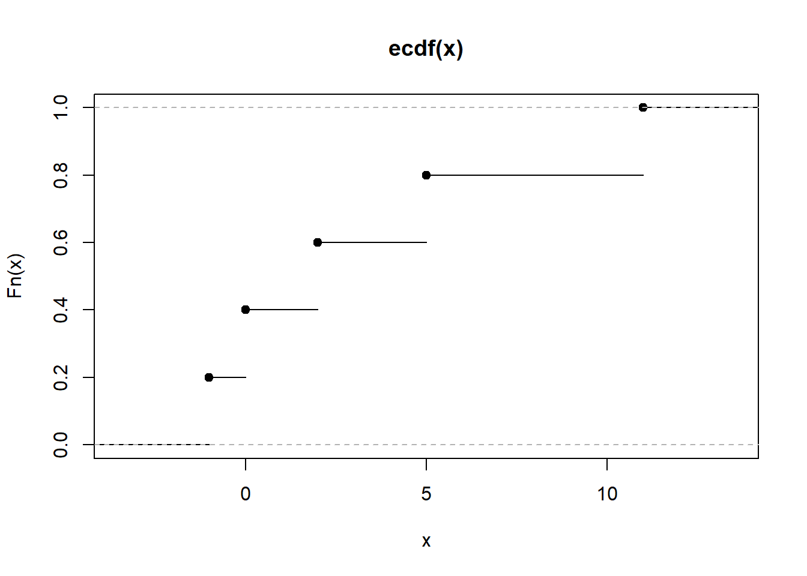

x<- c(2,5,0,11,-1)
Fn <- ecdf(x)
knots(Fn)[1] -1 0 2 5 11cat("Fn(3) = ", Fn(3))Fn(3) = 0.6cat("Fn(-2) = ", Fn(-2))Fn(-2) = 0These slides have been conserved as an appendix because they were originally added to this chapter, when a section on resampling was not included in previous chapters.
They can be used as an introduction to the bootstrap, similar to the scond part of the Chapter on Cross-validation and resampling.
The bootstrap has been applied to almost any problem in Statistics.
We illustrate it with the simplest case: estimating the standard error of an estimator.
x<- c(2,5,0,11,-1)
Fn <- ecdf(x)
knots(Fn)[1] -1 0 2 5 11cat("Fn(3) = ", Fn(3))Fn(3) = 0.6cat("Fn(-2) = ", Fn(-2))Fn(-2) = 0plot(Fn)
\(F_n (x)\) is a cumulative distribution function.
\(F_n()\) is an important DF because it comes to be the best approximation that one can find for the theoretical (population) distribution function, that is: \[ F_n(x) \longrightarrow F(x), \text { uniformly in } x \text{ as } n \rightarrow \infty. \]
This is stated in the Glivenko-Cantelli theorem also know as the Central Theorem of Statistics.

\(F_n\) is the distribution (function) of \(X_e\).
From here, we notice that generating samples from \(F_n\) can be done by randomly taking values from \(\mathbf{X}\) with probability \(1/n\)
Assume we want to estimate some parameter \(\theta\), that can be expressed as \(\theta (F)\), where \(F\) is the distribution function of each \(X_i\) in \((X_1,X_2,...,X_n)\).
For example, \(\theta = E_F(X)=\theta (F)\).
A natural way to estimate \(\theta(F)\) may be to rely on plug-in estimators, where \(F\) in \(\hat \theta (F)\) is substituted by some approximation (estimate) to \(F\).
\[\begin{eqnarray*} \theta_1 &=& E_F(X)=\theta (F) \\ \hat{\theta_1}&=&\overline{X}=\int XdF_n(x)=\frac 1n\sum_{i=1}^nx_i=\theta (F_n) \\ \theta_2 &=& Med(X)=\{m:P_F(X\leq m)=1/2\}= \theta (F), \\ \hat{\theta_2}&=&\widehat{Med}(X)=\{m:\frac{\#x_i\leq m}n=1/2\}=\theta (F_n) \end{eqnarray*}\]
A key point, when computing an estimator \(\hat \theta\) of a parameter \(\theta\), is how precise is \(\hat \theta\) as an estimator of \(\theta\)?
With the sample mean, \(\overline{X}\), the standard error estimation is immediate because the variance of the estimator is known: \(\sigma_{\overline{X}}=\frac{\sigma (X)}{\sqrt{n}}\)
So, a natural estimator of the standard error of \(\overline{X}\) is: \(\hat\sigma_{\overline{X}}=\frac{\hat{\sigma}(X)}{\sqrt{n}}\)
\[ \sigma _{\overline{X}}=\frac{\sigma (X)}{\sqrt{n}}=\frac{\sqrt{\int [x-\int x\,dF(x)]^2 dF(x)}}{\sqrt{n}}=\sigma _{\overline{X}}(F) \]
then, the standard error estimator is the same functional applied on \(F_n\), that is:
\[ \hat{\sigma}_{\overline{X}}=\frac{\hat{\sigma}(X)}{\sqrt{n}}=\frac{\sqrt{1/n\sum_{i=1}^n(x_i-\overline{x})^2}}{\sqrt{n}}=\sigma _{\overline{X}}(F_n). \]
The bootstrap method makes it possible to do the desired approximation: \[\hat{\sigma}_{\hat\theta} \simeq \sigma _{\hat\theta}(F_n)\] without having to to know the form of \(\sigma_{\hat\theta}(F)\).
To do this,the bootstrap estimates, or directly approaches \(\sigma_{\hat{\theta}}(F_n)\) over the sample.
\[\begin{eqnarray*} &&\mbox{Instead of: } \\ && \quad F\stackrel{s.r.s}{\longrightarrow }{\bf X} = (X_1,X_2,\dots, X_n) \, \quad (\hat \sigma_{\hat\theta} =\underbrace{\sigma_{\theta(F_n)}_{unknown}) \\ && \mbox{It is done: } \\ && \quad F_n\stackrel{s.r.s}{\longrightarrow }\quad {\bf X^{*}}=(X_1^{*},X_2^{*}, \dots ,X_n^{*}) \\ && \quad (\hat \sigma_{\hat\theta}= \hat \sigma_{\hat \theta}^* \simeq \sigma_{\hat \theta}^*=\sigma_{\hat \theta}(F_n)). \end{eqnarray*}\]
Resampling consists of extracting samples of size \(n\) of \(F_n\): \({\bf X_b^{*}}\) is a random sample of size \(n\) obtained with replacement from the original sample \({\bf X}\).
Samples \({\bf X^*_1, X^*_2, ..., X^*_B }\), obtained through this procedure are called bootstrap samples or re-samples.
On each resample the statistic of interest \(\hat \theta\) can be computed yielding a bootstrap estimate \(\hat \theta^*_b= s(\mathbf{x^*_b})\).
The collection of bootstrap estimates obtained form the resampled samples can be used to estimate distinct characteristics of \(\hat \theta\) such as its standard error, its bias, etc.
knitr::include_graphics("images/1.2-Ensemble_Methods-Slides_insertimage_2.png")
\[\begin{eqnarray*} \mathcal {L}(\hat \theta)&\simeq& P_F(\hat\theta \leq t): \mbox{Sampling distribution of } \hat \theta,\\ \mathcal {L}(\hat \theta^*)&\simeq& P_{F_n}(\hat\theta^* \leq t): \mbox{Bootstrap distribution of } \hat \theta, \end{eqnarray*}\]
This distribution is usually not known.
However the sampling process and the calculation of the statistics can be approximated using a Monte Carlo Algorithm.
\[ \hat{\sigma}_B(\hat\theta)\left (\simeq \sigma_B(\hat\theta)=\sigma_{\hat\theta}(F_n)\right )\simeq\hat \sigma_{\hat\theta}(F_n). \]
From real world to bootstrap world:
knitr::include_graphics("images/fromRealWorld2BootstrapWorld.png")
Aquesta imatge no mostra el càlcul del error estandar. Canviar-la per una que si ho faci